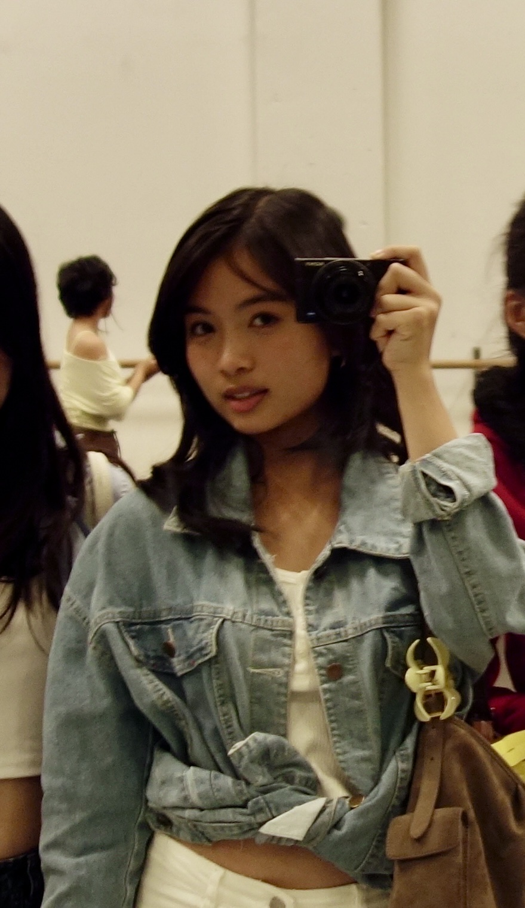
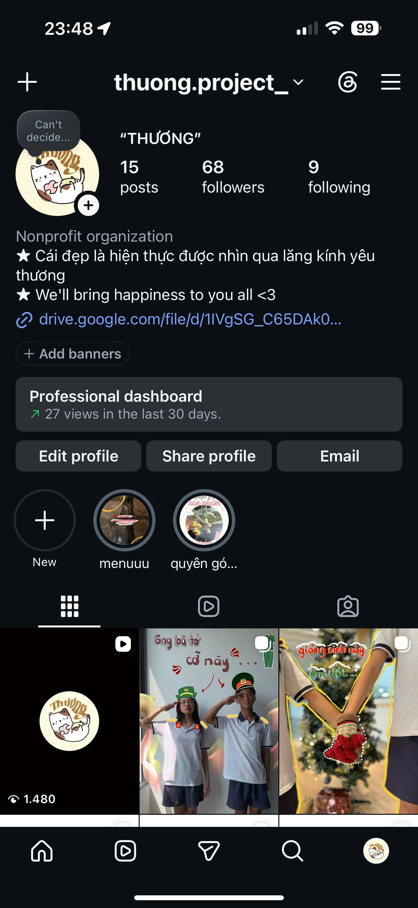
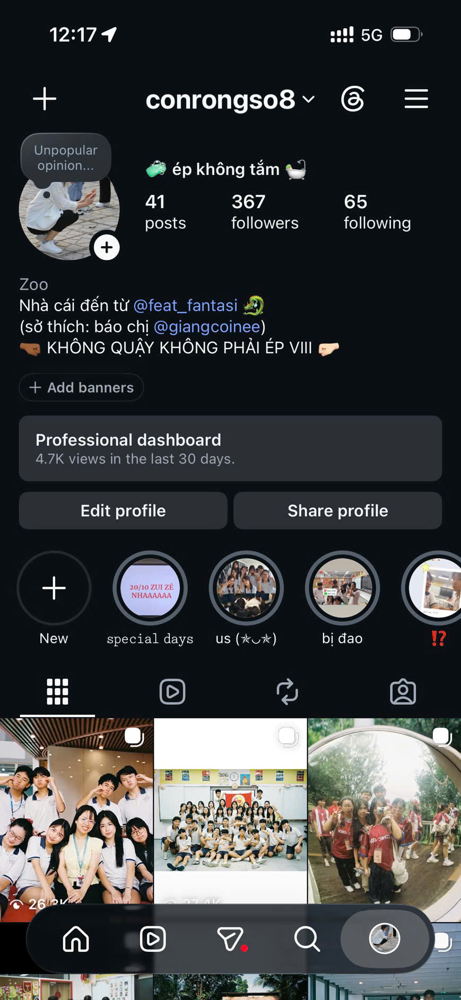
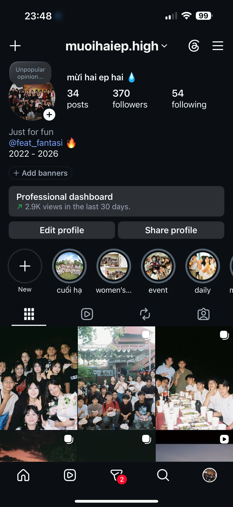
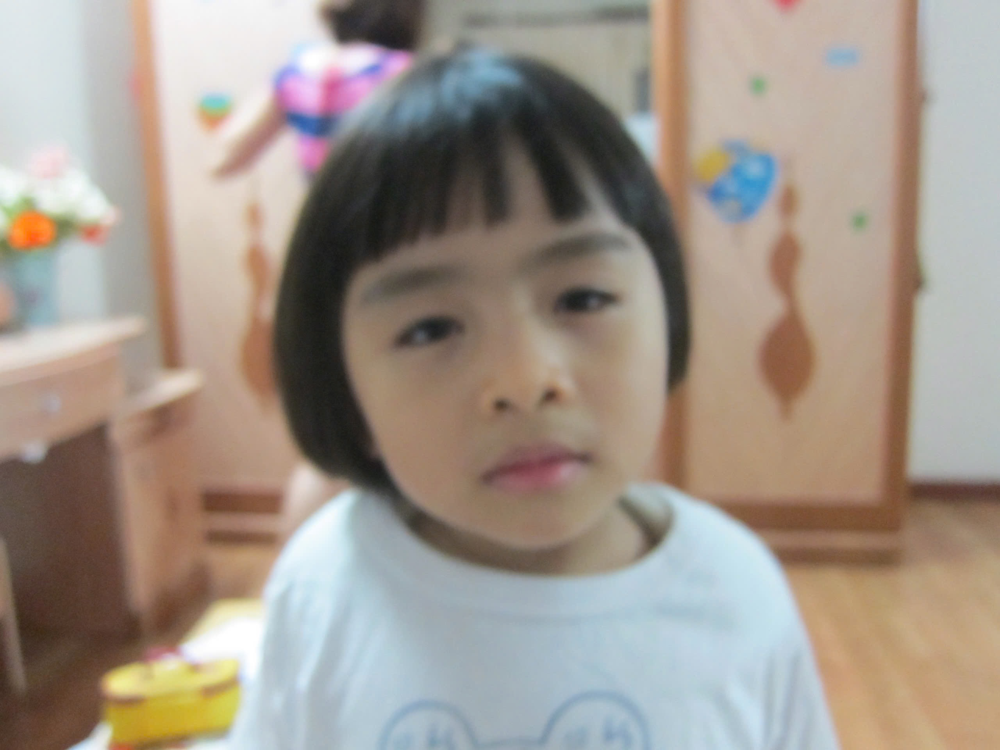
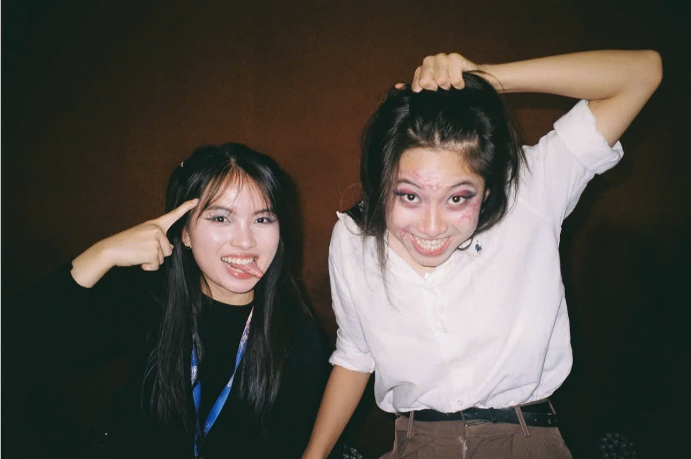
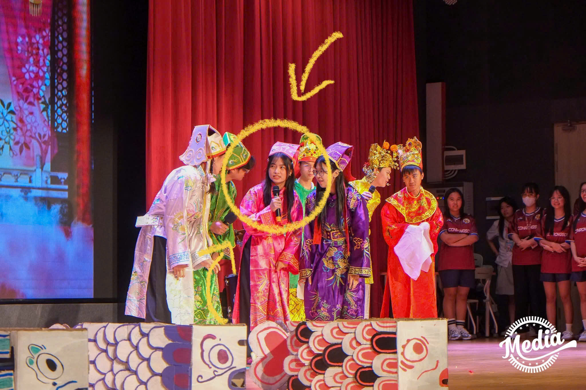
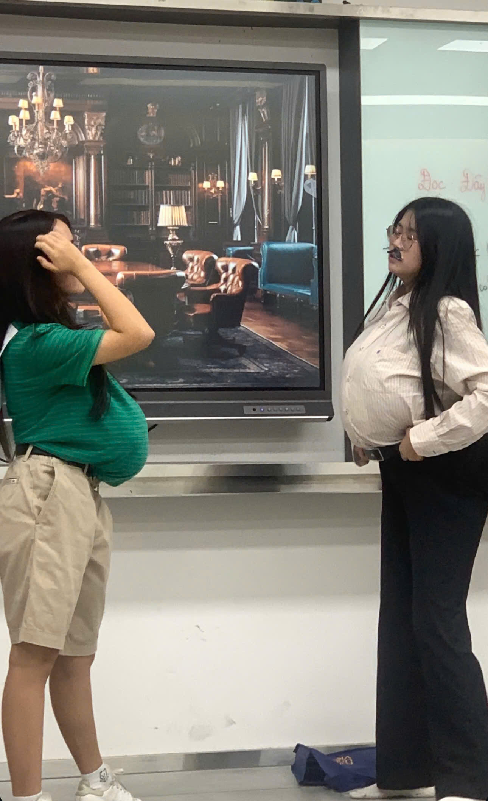
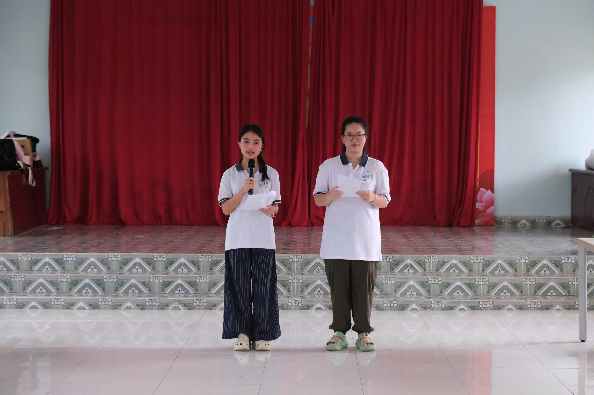

Having a headache looking for a PERFECT First-Year Rep?
You've reviewed dozens of standard profiles, and having a hard time deciding who is worthy for the fyr position? Welcome to FYR Quest, an interactive simulator where YOUR CHOICES helps you reveal the candidate you actually need.
MISSION BRIEFING:
Your mission: You are an executive of the club, through every scenario, choose an action that you expect your fyr will be able to do on their own.
How it works: After every choice you make, the system will calculate and scan through every candidate to find out the perfect candidate that matches your criteria.
Are you ready to find out who your future fyr is?
SITUATION 1
The club's event is coming up soon, but the team can't think of anything to create a promotion post / video that can reach first-years. You give the mission to your FYR, which result do you want to receive?
PROCESSING...
Processing choice... Screening database...
⚠️ WARNING: SUB-PAR FYR DETECTED!
You actually want a FYR who doesn't want to make efforts in promoting an event??? Your club deserves a candidate who is more amazing than this!!
MATCH FOUND: OLIVIA TRAN

Why can Olivia do well on this?
Creative mindset: Understanding that students prefer interactive games over long texts -> She knows how to create interactive games (quiz, bingo, riddles) that encourage students to voluntarily repost -> helping to spread the club’s image and event.
Hands-on Design & Content experience: Has designed for and managed three Instagram accounts (for projects and classes) -> Have a strong aesthetic sense; ability to maintain a cohesive feed; knows how to catch up to latest trends and viral audios.
Project IG Feed Proofs:



SITUATION 2
During an event, the video that introduces the club unexpectedly turns black. While the technical team scrambles to fix the issue, the audience starts to feel bored waiting. What should the FYR do in this situation?
MATCH FOUND: OLIVIA TRAN

Why can Olivia do well on this?
Retired theatre kid: Olivia used to be a theatre kid. She took on a wide range of roles (and dressed up as a woman, a man, a ghost, etc.). This experience has given Olivia a "thick skin," making her completely unafraid to be goofy in front of a crowd. If an event hits a snag, she is ready to step onto the stage and interact with the audience to buy time for the technical team.



Experience as a speaker: Olivia used to be the host for events at her high school and a speaker (Sweet & Sweeter school project) that teaches kids about emotional psychology
-> She knows how to adjust her word choice to connect and calm the audience down.

Well-prepared: Before any event, she always goes through the script to keep track of every activity -> In this situation, although she might not be a master at improvising, she would be familiar with the script and ready to step in and support the team if she notices any issue.
⚠️ WARNING: DEAD AIR & AWKWARD SILENCE DETECTED!
Do you really want a FYR who just stands there watching the event fall apart? Your club deserves a candidate who can break the silence better than that!!
FINAL SCREENING RESULT
Based on 100% of your strict criteria for Content Strategy, Crisis Management, and especially Passionate Execution, our algorithm matched 1 candidate:
🏆 OLIVIA TRAN - 100% MATCH!
(The fact that Olivia built a whole interactive game web app just to apply for your FYR position shows you exactly how passionate she is!!)